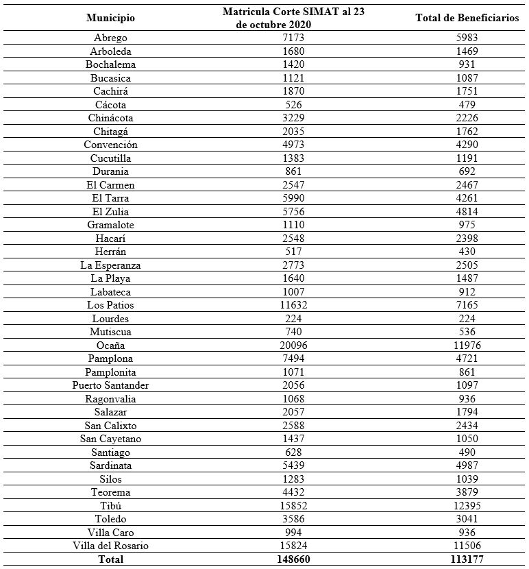
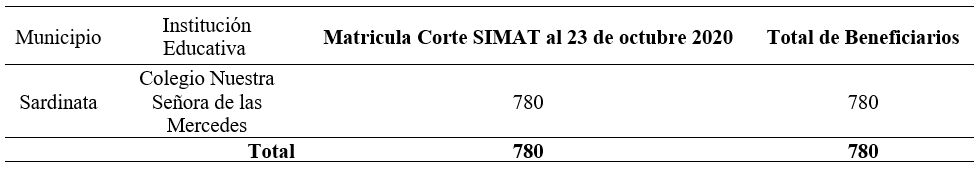
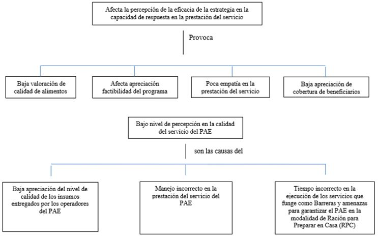
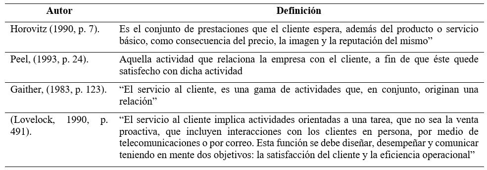
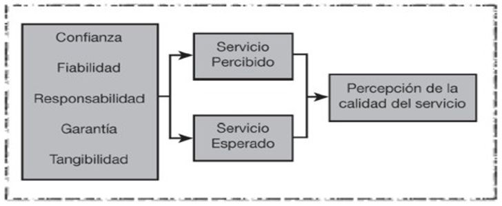
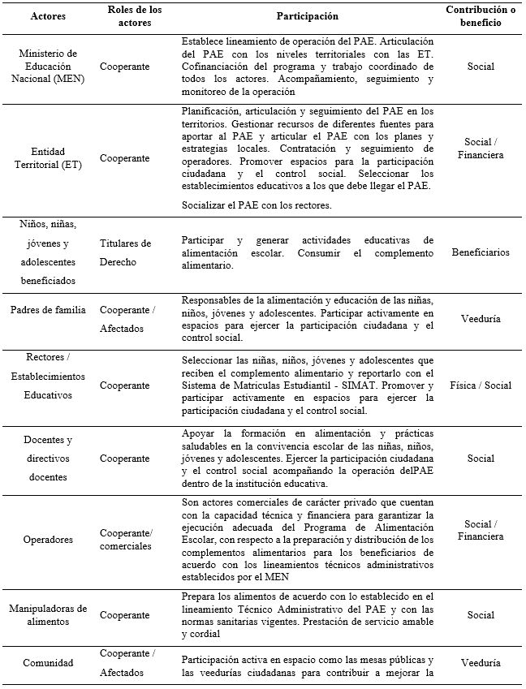
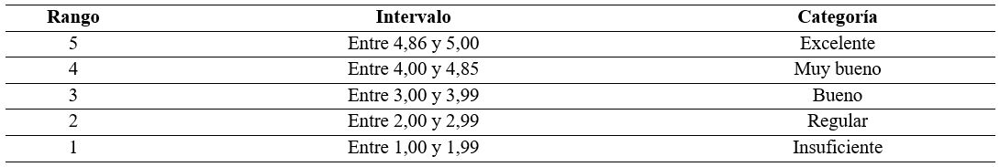
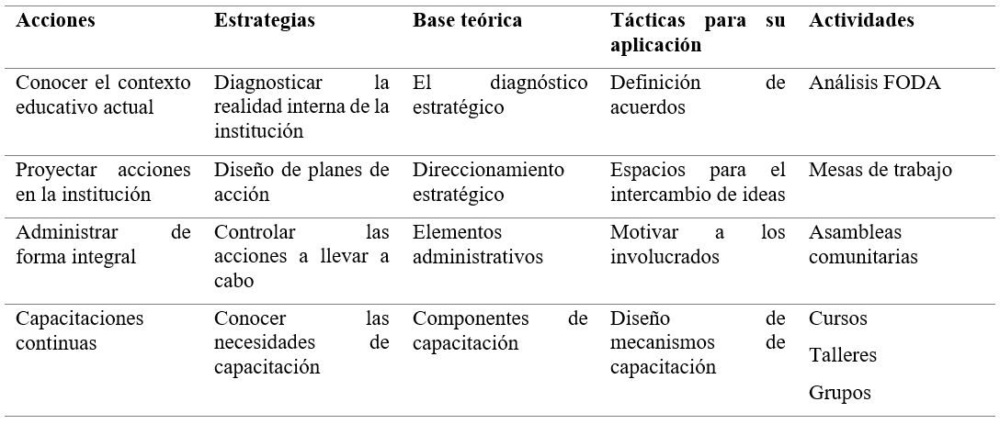
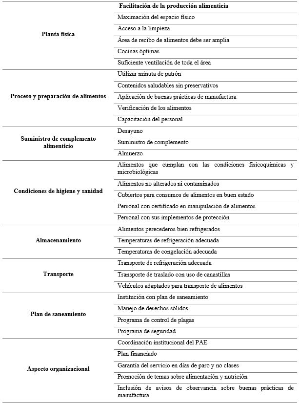

Introducción
En Colombia, el Programa de Alimentación
Escolar (PAE) en el contexto educativo de acuerdo
con el Decreto 1852 de 2015 del Ministerio de
Educación Nacional (MEN), viene a contribuir
en los estilos de vida saludables y mejoras en la durante la jornada escolar, para mantener los niveles
de atención, impactar de forma positiva los procesos
de aprendizaje, el desarrollo cognitivo, disminuir el
ausentismo y la deserción y fomentar estilos de vida
saludables. (MEN, 2015, Artículo 2.3.10.2.1)
Desde la perspectiva más general, el programa
no solo promueve desayuno, complementos
alimenticios o almuerzo para el desarrollo de los
estudiantes sino en cuanto a la continuación de la
niñez y la juventud en el sistema educativo formal.
Aunque, es necesario acotar, que el PAE, no llega
a todos los niños, niñas y jóvenes, debido que
utiliza una orientación geográfica que prevalece las
instituciones educativas rurales y exclusivamente a
las comunidades étnicas.
Dentro de estos parámetros, el MEN (2015),
en el Artículo 2.3.10.3.6, señala que la focalización
de los niños, niñas, adolescentes y jóvenes que se
benefician en el PAE viene dada por “la información
suministrada por el Sistema Integrado de Matrícula
(SIMAT), en armonía con las funciones que la ley
atribuye a los municipios”. Esencialmente, en el
programa predominan beneficiados los niños en
edad preescolar, así como básica y bachillerato, al
mismo tiempo, los educandos víctimas del conflicto
armado, independientemente del grado en el que
estén matriculados.
Un informe publicado recientemente por el
Fondo de las Naciones Unidas para la Infancia
(UNICEF, 2019) muestra que a nivel mundial
la infancia en edad escolar sufre de “retraso en el
crecimiento o emaciación (casi 200 millones),
mientras que al menos 340 millones sufrían de
hambre oculta” (p. 8). Aunque, existen los Programas
de Alimentación Escolar (PAE), que tienen un
rol fundamental en la lucha contra el hambre y la
malnutrición en todas sus formas. Además, juega
un papel en el comportamiento, la cognición y el
rendimiento académico con el fin de evitar que las
oportunidades de aprendizaje durante toda la vida
se vean afectada, al mismo tiempo, se realizan de
manera inclusiva, equitativa y de calidad.
Por otra parte, en Colombia, estos programas
son evidentemente no inclusivos, ya que los
beneficiarios fundamentales son seleccionados
de acuerdo a la modalidad de los alimentos
proporcionados y la presencia de intervenciones
complementarias establecidas en la Resolución
29452 del 2017 y sujeto al contexto como a los
recursos disponibles. Teniendo las áreas rurales una
cobertura del 100% de los escolares matriculados,
mientras que en las áreas urbanas, es para
escolares matriculados que se encuentren cursando
transición y primaria empezando por los que hacen
jornada única, es decir, educandos matriculados y
clasificados en Instituciones educativas urbanas
con alta concentración de población pertenecientes
a los grupos A, B y C de SISBEN para 14 ciudades
y grupo D para el resto urbano, de acuerdo a la
nueva metodología del SISBEN IV, así como, para
la población étnica y en condición de discapacidad.
Simultáneamente, el PAE, constituye un
incentivo que impacta a las familias para que
escolaricen a sus niños, son parte del tejido de
protección social y pueden ser utilizados como
mediaciones para responder en momento de crisis. No
solo ayuda a satisfacer las necesidades nutricionales
de los estudiantes sino puede mejorar o empeorar los
niveles de deserción de los niños vulnerables. En esa
dirección, una buena nutrición en la escuela puede
influir en la capacidad de atención y la motivación de
los estudiantes, lo que podría mejorar el rendimiento
académico.
De igual forma, el PAE, como política
gubernamental promueve el acceso y la permanencia
de los menores en el sistema educativo, la cual busca
una mayor cobertura y una calidad significativa
en la educación. Este programa adjudica raciones
alimenticias a niños, niñas y adolescentes en el nivel
básico y medio de educación (MEN, 2015); con
ello busca promover la matricula, la asistencia y el
rendimiento escolar, para minimizar los impactos por
falta de alimentos, ya que la no obtención de comidas
son un factor caracterizado en los estudiantes a la
repitencia de un grado escolar.
Frente a este escenario, existen falencias dentro del programa en cuanto a cobertura, en la calidad
de los alimentos y en la prestación del servicio. En cuanto la cobertura, Velasco Romero y Guío, (2019,
p.782) afirman que “el PAE … debe interesar a todos por tres razones: 1), porque hay asimetrías de
información, 2) Por la inconsistencia (…); y 3), porque las decisiones de los individuos repercuten, vía
tributos, negativamente…” Si bien, existen fallos de información como los sostienen los autores precitados,
la cobertura universal es una problemática, puesto que, arrastra un déficit, ya que no ha sido alcanzada
la totalidad de escolares en el territorio colombiano, ya que solo cerca del 60 % de los estudiantes de
entidades públicas participan actualmente de estos programas. En ese sentido, es importante destacar los
datos mostrados por la Gobernación Norte de Santander (2020) a través de relación de matrícula-beneficiario
tomados del SIMAT, donde no se cubre la totalidad de los estudiantes. (Ver Tabla I).
Tabla I. Relación matricula y total beneficiarios del Departamento Norte Santander

Como se observó en la Tabla I, existe una
matrícula en el Norte de Santander de 148.660
estudiantes inscritos en el SIMAT, y un total de
beneficiario del PAE de 113.177, lo que representa
cobertura del 76,13% en dicho departamento a partir
de la relación matricula/beneficiarios. Sobre la base
de las ideas expuestas en el Congreso de Colombia
(2019) en el Plan Nacional de Desarrollo 2018-2022,
identifica nuevas aristas aparte de la cobertura como
son el déficit en la infraestructura, financiamiento,
gestión territorial y transparencia, que se debe a los
exiguos recursos que destina el programa PAE en la
cobertura total. También, está lo relacionado a los
insumos entregados y la calidad de los alimentos.
En este sentido, el autor precitado menciona que
los insumos entregados son escasos por parte de los
operadores (63%) sin contar la calidad e inocuidad
de los alimentos, ya que no cumplen condiciones de
calidad (36%) y porciones estandarizadas (57%) y
desperdicios de comida (29%).
Con respecto a la calidad e inocuidad de los
alimentos, Kujar et al. (2016), encontraron que
algunas frutas entregadas en el programa PAE, no
cumplen con el parámetro de calidad como es el de
grado de madurez y que los actores responsables no
desempeñan su rol en la controlaría social, lo cual
agrava el problema en torno a la calidad. Sobre la
entrega de alimentos Velázquez (2020), indica que
luego de hacer un análisis interno y externo del PAE
en tiempos de COVID-19, desde la percepción de
los supervisores de las entidades territoriales del
Norte de Santander, establece factores claves que
afectan el funcionamiento del programa, en lo que
destacan barreras y amenazas para garantizar el
PAE en la modalidad de Ración para Preparar en
Casa (RPC) que sustituyó a las modalidades: Ración
Industrializada (RI) y Almuerzo para Preparar en
Sitio (APS) en la pandemia, pues, observó nuevos
patrones de entrega por tendencias hacia una
alimentación más saludable.
Dentro de este marco, relacionado con entrega
de alimentos del PAE a los escolares focalizados, la
Contraloría General de la República (2021), alerta que 74 entidades territoriales ejecutoras del PAE
no están entregando alimentación a los estudiantes
beneficiarios, también advierte en comunicado
de prensa número 12, que más de 4 millones
de estudiantes beneficiarios del PAE no reciben
alimentación. De igual manera, la Contraloría
General de la República (2021), tras haber iniciado
el calendario académico en todo el país, 11 entidades
territoriales aún no reportan inicio del PAE en el 2021,
además agrega que de acuerdo con la Resolución
007 de 2020, se está generando la atención bajo las
modalidades: Ración para Preparar en Casa (RPC)
87%, con Ración Industrializada (RI) 7%, operación
entregando RPC y RI 4%, entrega Bono Alimentario
(BA) 1% y entrega RPC y BA 1%.
Al mismo tiempo, Velázquez (2020) argumenta
que es necesario negociar con los proveedores
para garantizar el PAE ante esta situación, dado
a la importancia de los insumos y suministros del
programa que apoyen la actual oferta de productos
y del servicio. También, indica que la familia busca
beneficios funcionales ante la crisis económica
y social que ha generado en estos tiempos para
satisfacer necesidades alimenticias en el hogar.
Incluso, menciona qué desde el PAE, se hacen los
esfuerzos para adecuar estrategia focalizada para
cubrir el programa que están pendientes a los avances
del programa ante la pandemia. En este sentido, para
Velázquez (2020) los desafíos que se sostienen en
los colegios ante el COVID-19 y el PAE, incluyen
el desarrollo de sistemas seguros de distribución de
comidas, impulsar la baja participación, cubrir los
costos relacionados con COVID-19 y mantenerse
informado de los cambios de política. Las barreras
para las familias circunscriben dificultades de
transporte, preocupaciones de seguridad y falta de
alimentos frescos. En esa dirección, las estrategias
innovadoras aplicadas para abordar los obstáculos
podrían introducir nuevas percepciones de los
usuarios tanto en la transferencia de beneficios de
comidas, así como beneficiarios que la reciben.
Con base en la situación descrita, la Institución
Educativa Nuestra de las Mercedes, ubicada en el Municipio Sardinata, no escapa a estas problemáticas antes
mencionadas para el acceso de los servicios del
programa de alimentación escolar de los estudiantes focalizados, donde a partir de los datos publicado de la
Gobernación del Norte Santander (2020) se beneficia del servicio de almuerzo alrededor de 780 escolares,
datos que se aproximan a los emitidos en el Proyecto Educativo Institucional. (Ver Tabla II).
Tabla II. Cobertura matricula y total de beneficiario del Colegio Nuestra Señora de las Mercedes

En atención a la problemática, se podría
inferir que todo lo dicho anteriormente, trae como
consecuencia que los familiares, así como el resto
de actores del PAE en dicha institución educativa,
poseen una percepción de agrado o insatisfacción
frente al programa PAE, las cuales pueden estar
relacionadas con los modelos de satisfacción
del cliente. En otras palabras, la percepción del
individuo frente al servicio, así como la expectativa frente al desempeño del servicio y la satisfacción
frente a la alimentación, de acuerdo con Niño et al.
(2019) pueden ser influenciada por factores como
preferencia hacia algunos alimentos o baja calidad
del mismo, comportamientos saludables, edad,
composición del núcleo familiar, género, y nivel
socioeconómico de las personas, así como el manejo
del servicio que prestan las personas que atienden al
beneficiario (Ver Figura 1).

Figura 1. Árbol de problema
De este modo, la percepción de las personas
no solo incide en la apreciación sobre la cobertura
y modalidad de entrega del beneficio en dicha
institución sino en la calidad del servicio. Por ello, se
considera el concepto de la calidad. Primeramente,
como un elemento central en la estrategia empresarial
y la investigación académica. Segundo, las
organizaciones compiten por la calidad, las personas
buscan calidad y los mercados se transforman por la
calidad, tercero, la calidad está relacionada con la
satisfacción del cliente ( Díaz et al, 2016).
Por ende, es conveniente realizar una evaluación
en la Institución Educativa Nuestra de Las Mercedes,
para medir la calidad en la prestación del servicio
del programa PAE. Es importante estar al tanto en
estos tiempos de pandemia del COVID-19, de la
percepción de los usuarios de dicho programa. Los
usuarios o clientes de un bien, producto o servicio
de acuerdo con Chiavenato (2006), aportan sus “…
expectativas, experiencias, problemas, convicciones
y motivaciones” (p. 243) entendiendo, que la calidad
es una apreciación de que una cosa es mejor que otra,
va cambiando a lo largo de la vida y cambia de una
generación a otra. En otras palabras, la calidad en
la prestación de un servicio se modifica de acuerdo
con las valoraciones que tienen los sujetos en las
diferentes facetas de la actividad humana “variará
dependiendo el puesto gerencial, posición que tenga
en la institución” (Stoner et al., 1996, p. 229).
A toda esta situación problemática anterior,
no escapan el servicio prestado del Programa PAE,
en la institución educativa Nuestra Señora de Las
Mercedes-Sardinata (Norte de Santander) y su
relación con el cumplimiento de los objetivos del
programa. Atendiendo a estas consideraciones, se
requiere evaluar el servicios en cuanto a la calidad
percibida desde la perspectiva de los padres,
representantes, docentes, manipuladores de alimentos
y el rector, dado que la calidad es el grado en el que
un producto o un servicio satisface las expectativas
que sobre éste tiene su posible usuario y que según
Parasuraman et al. (1988) se puede evaluar en cinco dimensiones como son: la capacidad de respuesta,
fiabilidad, empatía, seguridad y elementos tangibles.
Revisión del Marco Teórico.
La calidad en las organizaciones tiene una doble
forma de representarla: por un lado, como un aspecto
natural dentro de la realidad organizacional y, por el
otro, como una respuesta de la organización frente al
medio. En el caso de las organizaciones educativas,
el PAE es esencial para avanzar hacia la calidad
educativa, porque facilita el acceso y permanencia
en el sistema educativo (MEN, 2015).
Desde un orden social, este proyecto se
busca potenciar los planes nutricionales que
contribuye principalmente a la garantía de dos
derechos fundamentales: el derecho a la educación
y a la alimentación (MEN, 2015) y constituye un
andamiaje para la institución educativa, autoridades
del programa y para el mismo Ministerio de
Educación Nacional, al evaluar la calidad en la
prestación del servicio del PAE y su relación con
el cumplimiento de los objetivos del programa
en la institución educativa Nuestra Señora de las
Mercedes en Sardinata (Norte de Santander), sin
dejar la lado la importancia e impacto que genera el
programa hacia los beneficiarios que sin duda alguna
logran contar con una ración alimentaria diaria que
suple necesidades nutricionales importantes lo que
motiva la asistencia escolar.
Desde una perspectiva en lo político y económico,
el PAE tiene un alcance superior al simple suministro
de alimentos tanto en las raciones industrializadas,
servidas en los colegios o raciones para preparar en
casa, y convertirse en la prestación de un servicio
que no solo implica aspectos tangibles en la calidad
educativa, como usualmente se piensa, sino también
mecanismos intangibles de la organización que hoy
se encuentra en cabeza del Ministerio de Educación
y ejecutado desde el orden territorial (Archbold et al,
2017). Constituye una forma de evaluar las políticas
del Estado colombiano, así como proporciona un
mecanismo de control presupuestario en materia
de seguridad alimentaria que garantiza y protege el derecho de acceso a la educación y la calidad
educativa (Chacón, 2020). Añadiendo además el
impacto positivo que el programa de alimentación
genera hacia la economía de los beneficiarios, toda
vez que esto permite disminuir el gasto de la canasta
básica de alimentos en determinado número de
viviendas o familias.
Percepción
La percepción a veces es entendida como
la conciencia de cosas materiales individuales
presentes para sentir, también, refiere al conjunto
de procesos que se utilizan para dar sentido a todos
los estímulos que se encuentran en el entorno. Es
decir, obedece a actividad de receptores que son
resultantes del mundo real, pues la percepción “es
el proceso cognoscitivo que permite interpretar y
comprender el entorno. Asimismo, es la selección
y organización de estímulos del ambiente para
proporcionar experiencias significativas a quien los
experimenta” (Arnheim, 1986, p.53).
Arias (2006) define la percepción como “el
resultado del procesamiento de información que
consta de estimulaciones a receptores en condiciones
que en cada caso se deben parcialmente a la propia
actividad del sujeto” (p.10). De ahí, que es un
proceso sensorial y de estimulación que se traduce
en experiencia organizada. Esa experiencia, o
percepción, es el producto conjunto de la estimulación
y del proceso mismo. Por tanto, la percepción
se caracteriza por ser subjetiva, proceso internoexterno de estímulos y un proceso que influye en la
apreciación del contexto social (Arnheim, 1986).
Interpretando a Arias (2006) la percepción en
las personas, es un proceso que está determinado
por necesidades, valores sociales, aprendizajes y
en general por las características permanentes y
temporales de los individuos. Entonces, primero, se
atienden estímulos de nuestro entorno y no otros.
Segundo, se organizan los estímulos en patrones
significativos y comprensibles; y tercero, es el proceso subjetivo a través del cual se representa y se
entienden los estímulos.
Calidad
La calidad es un concepto difícil de definir y
medir. En opinión de Chiavenato (2006) la palabra
calidad tiene varios significados. Primero la calidad,
es la atención a las exigencias de las personas.
Seguidamente, para Deming (1982) “la calidad
debe tener como objetivo las necesidades del
usuario, presentes y futuras” (p. 47). En la literatura
especializada sobre la calidad según Moreno,
Hernández, Lengster, Moreno y González citados
en Bondarenko (2007) se pueden encontrar siete
definiciones principales de la misma: 1. Aptitud para
el uso, 2. Satisfacción del cliente, 3. Conveniencia
al uso o conveniencia al propósito, 4. Conformidad
con los requisitos, 5. Un producto libre de defectos,
6. Capacidad para satisfacer las expectativas del
consumidor y, 7. Cumplimiento o superación de las
expectativas del usuario o cliente a un costo que le
represente valor.
Igualmente, Bondarenko (2007) mencionando
a Garvin (1992) identifica cinco aproximaciones de
calidad y asegura que cualquier definición que se le
otorgue puede situarse fácilmente en cualquiera de
ellas: 1. La trascendente de la filosofía, 2. basada en
el producto, 3. La basada en el usuario, 4. La basada
en la fabricación y, 5. La basada en el valor del
producto. En esencia, en los conceptos de calidad
figuran el cliente, usuario, beneficiario porque en
la organización existen una infinidad de cadenas de
proveedores y clientes, usuarios o beneficiarios y la
calidad se aplica en el nivel operacional. De este modo,
el concepto de calidad tiene diversas connotaciones,
pero por su uso práctico, está asociada esencialmente
a las actividades de producción, comercialización e
intercambio de bienes y servicios.
Calidad del servicio
La calidad y el servicio están íntimamente
relacionados, dado que la calidad refiere satisfacer las necesidades de los usuarios en cuanto al servicio.
Duque (2005) menciona que el servicio es entonces
entendido como el trabajo, la actividad y/o los beneficios que producen satisfacción a un consumidor.
Asimismo, examinan las siguientes definiciones de servicio al cliente (Ver Tabla III).
Tabla III. Definiciones de servicio al cliente

Fuente: Duque (2005)
En relación a la definición de Calidad del
Servicio Albrecht (2005), dice que es “la medida
de la dimensión en que una cosa o experiencia
satisface una necesidad, soluciona un problema o
agregar un valor para alguien” (p.21). Por otro lado,
Parasuraman et al., (1988), denominaron la calidad
del servicio a la dirección y grado de discrepancia
entre la percepción del cliente y sus expectativas, en
términos de las dimensiones de la calidad del servicio
que pueden afectar el comportamiento futuro de los
consumidores. La calidad de servicio se percibirá de
forma diferente según el cliente”, ya que el servicio
se caracteriza por ser intangible, inseparable o
simultaneo, heterogéneo y tiene caducidad:
- Intangibilidad, refiere que el resultado en la
prestación o toma de un servicio permite determinar
si el cliente se encuentra satisfecho o no, es decir,
que los servicios son imperceptibles, pues no son
objetos sino resultados (Duque 2005).
- Inseparabilidad, es la relación de doble
vía entre quien consume y crea el servicio. La
producción y el consumo son indisociables (Duque,
2005). Por ello, la calidad de los servicios es difíciles
de evaluar, tienen riesgo percibido del cliente, la
valoración (por parte del cliente) se da mediante una
comparación entre expectativas y resultados y las evaluaciones hacen referencia tanto a los resultados
como a los procesos de prestación de los servicios
(Parasuraman, Zeithaml y Berry, 1985 citado en
Duque, 2005).
- Heterogeneidad, da cuenta de que los
servicios, son poco estandarizables, por tanto, la
prestación del servicio puede variar frente a otro.
- Caducidad, refiere que los servicios son
perecederos.
De la misma manera, estas expectativas se
pueden medir a través del modelo SERVQUAL
(Parasuraman et al, 1988), el cual es un método
utilizado para evaluar la calidad de los servicios tanto
en el campo empresarial como en el académico. (Ver
Figura 2).

Figura 2. Modelo SERVQUAL
Fuente: Parasuraman, Zeithaml y Berry (1998)
- Elementos tangibles: Apariencia de las
instalaciones físicas, equipos, personal y materiales.
- Fiabilidad: Habilidad para ejecutar el servicio
prometido de forma fiable y cuidadosa.
- Capacidad de respuesta: Disposición para
ayudar a los clientes y para proveerlos de un servicio
rápido.
- Profesionalidad: Posesión de las destrezas
requeridas y conocimiento del proceso de prestación
del servicio.
- Cortesía: Atención, respeto y amabilidad del
personal de contacto.
- Credibilidad: Veracidad, creencia y honestidad
en el servicio que se provee.
Seguridad: Inexistencia de peligros, riesgos o dudas.
- Accesibilidad: Lo accesible y fácil de contactar.
- Comunicación: Mantener a los clientes
informados, utilizando un lenguaje que puedan
entender, así como escucharlos.
- Comprensión del cliente: Comprensión del cliente: Hacer el esfuerzo de
conocer a los clientes y sus necesidades
Según Duque (2005) los autores de este
modelo de la escuela americana realizaron estudios
estadísticos, encontrando correlaciones entre las
dimensiones iniciales, que a su vez permitieron
reducirlas a cinco: Confianza o empatía, fiabilidad,
responsabilidad, capacidad de respuesta y
tangibilidad. Por otra parte, Grönroos (1984) citado
en Mora (2011) haciendo referencia a la calidad
del servicio y la satisfacción del consumidor
señala que es importante entender lo que el usuario
busca realmente y lo que éste evalúa, por un lado,
la calidad técnica o diseño del servicio, donde se
valora correctamente lo que el cliente quiere, esto se
ve reflejado en el resultado general de la calidad del
servicio; y por otro, la calidad funcional o proceso
de la calidad del servicio, que se sintetiza en cómo
se prestará el servicio.
Marco Conceptual
Programa de Alimentación Escolar (PAE)
El PAE es un programa social que data del siglo
pasado y actualmente tiene una cobertura de más de
5 millones de estudiantes de colegios oficiales, en
condiciones de pobreza de prácticamente todos los
municipios del país. El programa tiene una duración
anual de 180 días. Según la Resolución 06054 de
30 diciembre 2010 del Instituto Colombiano de
Bienestar Familiar (ICBF), el PAE consiste en:
… el suministro organizado de un complemento
nutricional con alimentos inocuos, a los niños, niñas
y adolescentes matriculados en el sistema educativo
público, y el desarrollo de un conjunto de acciones
alimentarias, nutricionales, de salud y de formación,
en adecuados hábitos alimenticios (sic) y estilos
de vida saludables, que contribuyen a mejorar el
desempeño de los escolares y apoyar su vinculación
y permanencia en el sistema educativo, con la
participación activa de la familia, la comunidad, los
entes territoriales, y demás entidades del Sistema
Nacional de Bienestar Familiar (p. 20).
Velasco, Romero y Guío (2019) dicen que “el
PAE contiene dimensiones interconectadas a manera
de un poliedro, y hacen parte de la planificación
y programación, la distribución (incluida la
contratación), y la ejecución: focalización,
desperdicio, huella agroalimentaria, tributación,
canasta adecuada, publicidad y operación,
principalmente” (p. 73). Asimismo, argumentan
que el PAE está constituido por 21 menús distintos
elaborados por el operador y aprobados por la
Entidad Territorial Certificada (ETC).
De lo anterior, se confirma que el PAE es una
estrategia que promueve el acceso y la permanencia
de los niños, niñas y adolescentes focalizados a
través de la entrega de un complemento alimenticio.
De acuerdo con Ángel (2012) el objetivo de este
programa es contribuir a mejorar el desempeño
académico de las niñas, niños y adolescentes, lograr su
asistencia regular, y promover la formación de hábitos
alimentarios saludables en la población escolar, con
la participación activa de la familia, la comunidad
y el Estado por medio de los entes territoriales. La
autora precitada, dice que, dependiendo del tiempo
de consumo, se realiza la entrega de estos alimentos
mediante tres esquemas diferentes y el aporte
nutricional de la complementación alimentaria se
clasifica de la siguiente forma:
- El desayuno provee entre el 20% y el 25% de
las recomendaciones diarias de energía y nutrientes
según el grupo de edad de los escolares.
- El complemento alimentario de la jornada
de la tarde, refiere entre el 20 y el 25% de las
recomendaciones diarias de energía y nutrientes,
según el grupo de edad de los escolares. El
almuerzo, representa entre el 30 y el 35% de las
recomendaciones diarias de energía y nutrientes,
según el grupo de edad de los escolares.
- Dentro de este contexto, el tipo de alimento
entregado se ajusta a la situación de infraestructura
y de lugar, clasificándose así según, el tipo de preparación que puede ser a) ración preparada en el
sitio, o, b) ración industrializada lista para consumir.
Actores del PAE
El Ministerio de Educación Nacional (MEN,
2016) señala que los participantes de concurrencia al
programa PAE son “actores conducentes a garantizar
la adecuada y oportuna ejecución y prestación del
PAE”, es decir, que el estado colombiano requiere
del apoyo de los actores sociales, los cuales deben
participar responsablemente y contribuir desde sus
respectivos roles y obligaciones. De este modo,
el MEN (2016) presenta el siguiente análisis de
participantes del programa (Ver Tabla IV).
Tabla IV. Actores que participantes del programa PAE

La calidad del servicio bajo la percepción del
usuario aplicada al programa de alimentación
escolar (PAE)
A este respecto, Stoner et al. (1996) sostienen
que una de las principales tendencias que impulsan
a las organizaciones, son las normas impuestas
por los usuarios y clientes, que exigen una calidad
excepcional. En otras palabras, la eficacia percibida
del servicio tiene una visión externa de la calidad,
el cliente es el auténtico juez de la calidad, pues, se
basa en sus necesidades, deseos y expectativas. En
ese caso, el usuario se convierte en el protagonista,
en el elemento central e imprescindible de esta nueva
concepción de la calidad. La calidad gira en torno a las
percepciones de satisfacción de los usuarios acerca
del servicio o servicio recibido. En el caso, del PAE,
según ICBF (2010) los alimentos y las instalaciones,
tienen que cumplir con los estándares establecidos
por la misma institución para garantizar la calidad
del servicio que se ofrece a los escolares en tal grado
que cumpla con las características inherentes con los
requisitos exigidos.
También, la calidad está ligada a ·la adecuación
para el uso satisfaciendo las necesidades del cliente
o usuario, que en este caso corresponde a los niños y
sus respectivos padres o representantes. La eficacia
del programa repercute en la percepción de la
calidad del servicio recibido, pues está relacionado
con el estado nutricional del Programa y la calidad
del servicio PAE con respecto al desarrollo,
alimentación, nutrición, salud de los beneficiarios,
así como la deserción y la permanencia escolar. En
consecuencia, la percepción de calidad del servicio
recibida del PAE, está vinculada también con las
condiciones alrededor del hecho educativo para
mitigar la crisis económica, pobreza en el entorno
de los y las estudiantes, los cuales están atados a
calidad y cobertura del PAE (Velasco et al., 2014).
Esto, redunda en la permanencia de los escolares
al sistema educativo para cumplir los requisitos
académicos. Así como, del desarrollo, organización
y participación de la comunidad en general, y la
educativa, para el aseguramiento de la calidad del servicio (ICBF, 2010). Entonces, la calidad del
servicio para Zeithaml (citado por Duque y Chaparro,
2012) “… está sujeta a la calidad percibida, que es
subjetiva, y se entiende como el juicio del consumidor
sobre la excelencia y superioridad de un producto”
(p. 164). Lo que se entiende que son expectativas del
cliente.
Por otro lado, Arciniegas y Mejías (2017)
destaca que los clientes (actores educativos del
PAE) poseen una expectativa de calidad acerca de
un servicio las cuales se pueden evaluar de acuerdo a
las dimensiones de la calidad de servicio propuestas
por
Parasuraman et al. (1998) como son los
elementos intangibles, fiabilidad, capacidad de
respuesta, seguridad y empatía en los siguientes
indicadores según (Lara, 2002; Duque 2005): a)
Confianza o empatía: Muestra de interés y nivel de
atención individualizada que ofrecen las empresas
a sus clientes (agrupa los anteriores criterios de
accesibilidad, comunicación y compresión del
usuario); b) Fiabilidad: Habilidad para ejecutar el
servicio prometido de forma fiable y cuidadosa;
c) Responsabilidad: Seguridad, conocimiento y
atención de los empleados y su habilidad para
inspirar credibilidad y confianza; capacidad de
respuesta: disposición para ayudar a los clientes y
para prestarles un servicio rápido y; d) Tangibilidad:
Apariencia de las instalaciones físicas, equipos,
personal y materiales de comunicación). Los aspectos
relevantes que el PAE tiene en cuenta corresponden
a:
Instalaciones físicas, se refiere al espacio
físico donde se localiza el Programa de alimentación
escolar, sino también el lugar donde se desenvuelve
y se lleva a cabo el servicio de la misma. Para Lara
(2002) los elementos tangibles por propia naturaleza
intangible del servicio hacen que se tienda a
tangibilizarlo.
Aspecto del personal, da cuenta de las
condiciones de pulcritud y buen gusto que proporcionan una buena base a la conducta social
que incluye desde la vestimenta, normas de aseo,
cuidado personal y reglas de cortesía.
Calidad los alimentos, conjunto de
condiciones que hacen aceptables los alimentos
a los consumidores. Estas incluyen las percibidas
por los sentidos: sabor, olor, color, textura, forma y
apariencia.
Habilidad para ejecutar el servicio, son aquellas
inherentes a la propia persona, que no tienen que ver
con su conocimiento técnico sino con su carácter
y fiabilidad. Según Lara (2002) Dar fiabilidad al
cliente es también cumplir lo que se promete, es
decir, lo que se promete en cuanto a los alimentos y
los horarios de entrega, entre otras.
Prácticas sanitarias, corresponde a aquellos
aspectos que ponen en riesgo la calidad e inocuidad
(característica de un alimento que al consumirlo
no afecta a la salud) de los alimentos como
producción, almacenamiento, distribución, prácticas
inapropiadas, entre otros.
Disposición de servicio, es la cualidad de
servicio, es la capacidad de disposición para que
un actor del programa PAE, realice un trabajo y dar
respuesta al mismo. De acuerdo con Lara (ob. cit.)
dar respuesta es ayudar a los clientes y proveerlos de
un servicio rápido.
Prestación de servicio, es la de una relación
obligacional en la cual un actor del programa del
PAE, se compromete a desenvolver una prestación a
favor de otra (estudiantes focalizados). Es decir, debe
ser capaz de responder eficazmente a situaciones
inesperadas (Lara, ob. cit.). De esta forma, los
alimentos para los beneficiarios focalizados deben
ser de calidad.
Capacidad para inspirar confianza y seguridad,
es un factor clave en las actividades que realizan los
actores implicados en el programa del PAE, así como,
la seguridad en los productos que se adquieren, los servicios que se contratan y, en las relaciones que se
establecen. Por ello, es el sentimiento que tienen los
clientes o usuarios cuando saben que están en buenas
manos (Lara, ob. cit.), la cuales se da a través de
tres generadores fundamentales, el conocimiento, la
integridad y la empatía que los actores pueden tener
del Programa PAE.
Conocimiento y Amabilidad del actor
cooperante, refiere a los conocimientos que tienen
los distintos actores cooperantes del PAE para
realizar sus actividades de manera segura, y a su
vez, realizarlo de manera cortes, complaciente y
afectuosamente, porque es la imagen y el nombre
del Programa PAE, lo que crea estas sensaciones en
los estudiantes beneficiados y resto de los actores del
programa.
Atención individualizada, es una forma de
aplicación de la actividad que realiza un actor
cooperante dentro del servicio del PAE, la cual busca
prestar un servicio de calidad con base a una técnica
específica para comprender las necesidades de los
estudiantes beneficiados y resto de los actores del
programa.
Comprensión, es entender como naturales las
acciones para alcanzar un entendimiento de las cosas
de manera empática en el servicio del Programa
PAE, y adaptarla a sus realidades concretas. Según
Lara (2002) la comprensión es parte de la empatía y
por ello, se busca que los actores tengan la habilidad
de ponerse en el lugar de otra.
Materiales y Recursos
En este apartado se describen el enfoque
y diseño de la metodología que se utilizó en el
desarrollo de la presente investigación, así como
las técnicas e instrumentos aplicados a los sujetos
dentro del contexto de la Unidad Educativa Nuestra
Señora de las Mercedes, para evaluar la calidad en la
prestación del servicio del PAE en dicha institución
educativa y su relación con el cumplimiento de los
objetivos del programa, seguidos del procedimiento de recopilación de información, el procesamiento y
análisis de la misma.
Enfoque de investigación
La presente investigación, se enmarca en un
estudio mixto concurrente para entender la dinámica
del contexto vinculado a la Institución Educativa
Nuestra Señora de las Mercedes sobre la calidad en
la prestación del servicio del PAE. Para Hernández
et al. (2016) las etapas de una investigación mixta
recurrente “…suelen integrarse los enfoques
cuantitativo y cualitativo” (p.540). Los autores
precitados argumentan que con el enfoque mixto
se alcanza una perspectiva más amplia y profunda
del fenómeno, porque este enfoque capitaliza la
naturaleza complementaria de las aproximaciones
cuantitativa y cualitativa, donde se exploran
distintos niveles del problema de estudio. Incluso,
agregan que se puede evaluar más extensamente
las dificultades en nuestras indagaciones, ubicados
en todo el proceso de investigación y en cada una
de sus etapas. Bajo una orientación basada en un
análisis mixto (cuali-cuantitativo) la obtención
de conocimiento es permitido con la práctica de
estudios a través de la combinación, la triangulación
o la complementación desde los métodos (Blanco y
Pirela, 2016).
Tipo de investigación
El tipo de investigación se conceptualiza
como descriptiva, misma que Hernández et al.
(2016) detallan que trata de “buscan especificar
las propiedades, las características y los perfiles de
personas, grupos, comunidades, procesos, objetos o
cualquier otro fenómeno que se someta a un análisis”
(p. 92), con el que el fin de contextualizar y establecer
las percepciones de los padres, representantes,
docentes y manipuladores de alimentos y el rector
de la Institución Educativa Nuestra Señora de Las
Mercedes, Sardinata- Norte Santander, en cuanto a
la calidad de servicio del PAE y su relación con el
cumplimiento de los objetivos del programa.
Diseño de la investigación
Hurtado (2010) señala que el diseño de la
investigación “se refiere a dónde y cuándo se recopila
la información, así como la amplitud a recopilar,
de manera que dé respuesta a la pregunta de la
investigación de la forma más idónea posible” (p.
199). En los estudios mixtos recurrentes, se aplican
métodos cuantitativos y cualitativos de manera
simultánea (los datos se recolectan y analizan más o
menos en el mismo tiempo). Asimismo, Hernández
et al.; (2016) citando a Creswell (2013) añade que
en “los métodos mixtos utilizan evidencia de datos
numéricos, verbales, textuales, visuales, simbólicos
y de otras clases para entender problemas en
las ciencias”. De igual manera, el estudio se
adapta al diseño de investigación no experimental
transeccional pues se realizará en un solo momento
y no habrá manipulación de las variables, puesto que
estas serán observadas y estudiadas directamente de
la realidad.
Procedimientos
Desde el punto de vista cualitativo, se pretenderá
contextualizar, desde los actores cooperantes (158
padres de familia y representantes, así como cuatro
informantes claves: un docente, dos manipuladores
de alimentos y el rector) de la Institución Educativa
Nuestra Señora de las Mercedes, Sardinata- Norte
Santander, respuestas a preguntas pertinentes a
la calidad en la prestación del servicio del PAE y
su relación con el cumplimiento de los objetivos
del programa, más exactamente, en cuanto a las
dimensiones de la calidad de servicio como fiabilidad,
seguridad, empatía, capacidad de respuesta y
elementos intangibles, partiendo de su propia
realidad, examinándole a ella misma, relacionando,
interpretando y comprendiendo a partir de los datos o
información obtenida para encontrar las respuestas,
a través de un guion de preguntas, que llevarán a
tener una visión más acertada para poder actuar
consecuentemente.
A su vez, se tendrá en cuenta etnografía
porque se caracteriza por describir y analizar
ideas, creencias, significados, conocimientos y
prácticas de grupo, culturas y comunidades. Donde
los actores cooperantes del programa PAE y por
tanto las dimensiones en la prestación del servicio,
representan ámbitos muy importantes para evaluar
la calidad de este. Además, es importante tener en
cuenta, la realidad de los docentes, manipuladores de
alimentos y el rector desde la realidad de los hechos
en estos tiempos de pandemia.
Desde el punto de vista cuantitativo, se
pretenderá establecer información acerca de la
percepción de la calidad en la prestación del servicio
del PAE, pero desde el punto de vista de los actores
cooperante/afectados (158 padres de familia y
representantes, así como cuatro informantes claves:
un docente, dos manipuladores de alimentos y el
rector) de la Institución Educativa Nuestra Señora
de las Mercedes, Sardinata- Norte Santander.
Asumiendo la metodología cuantitativa, donde
se recolecta información o datos estructurados y
manejados estadísticamente; al mismo tiempo,
descriptivamente, asociando y relacionando
variables que representan cantidades para hallar
el tipo de relación entre dichas variables e inferir
generalizaciones. Los datos cuantitativos se
pueden verificar y usar en procesos estadísticos
para demostrar patrones de comportamiento y así
hacer inferencias o afirmaciones que permiten
posteriormente probar teorías.
La investigación oscila entre los esquemas de
pensamiento inductivo y deductivo, se necesitarán
realizar lo siguiente en estos diseños: a) Se
recolectarán datos cuantitativos y cualitativos de
manera simultánea, b) Se realizarán análisis
cuantitativos y cualitativos sobre los datos de ambos
tipos durante todo el proceso. Se comparan variables
y categorías cuantitativas con temas y categorías
cualitativas y se establecen múltiples contrastes, c)
Los resultados se podrán generalizar y es factible
al mismo tiempo probar hipótesis, d) Durante
la interpretación y la discusión se terminaran de explicar las dos clases de resultados, y generalmente
se efectuaran comparaciones de las bases de datos,
y, e) Se comentan los resultados de lado a lado,
es decir, se incluyen los resultados estadísticos de
cada variable o hipótesis cuantitativa, seguidos
por categorías y segmentos (citas) cualitativos, así
como teoría fundamentada que confirme o no los
descubrimientos cuantitativos.
Población y Muestra
La población es el conjunto de personas u
objetos de los que se desea conocer algo en una
investigación. Arias (2012, p. 82) menciona que
la población “es un conjunto finito o infinito de
elementos con características comunes para los cuales
son extensivas las conclusiones de la investigación.
Esta queda delimitada por el problema y por los
objetivos del estudio”. La población a la cual se
orientó el proyecto está conformada por los padres
y representantes de los 800 estudiantes focalizados
en el Programa PAE. Es decir; 780 padres de familia
y/o representantes.
Tamayo y Tamayo (2007) consideran que la
muestra descansa en el principio de que las partes
representan un todo y por tal refleja las características
que definen la población de la cual fue extraída.
Por ende, la presente investigación determinó que
la muestra está dada por 158 padres de familia y
representantes, así como cuatro informantes claves:
un docente, dos manipuladores de alimentos y el
rector, con una margen de error del 7% y confianza
de 95%, una heterogeneidad de 50%.
Instrumentos
Para Hernández et al. (2016) “la recolección de
datos ocurre en los ambientes naturales y cotidianos
de los participantes o unidades de análisis. En el
caso de seres humanos, en su vida diaria: cómo
hablan, en qué creen, qué sienten, cómo piensan,
cómo interactúan, etcétera” (p. 409). Según Arias
(2016), “Un instrumento de recolección de datos “es
cualquier recurso, dispositivo o formato (en papel o digital), que se utiliza para obtener, registrar o
almacenar información” (p. 67). Entonces, recoger
datos no es sino deducir de modo intencionado y
sistemático mediante un instrumento o de los sentidos
sobre la estrategia aplicada. Considerando lo anterior,
los enfoques metodológicos, tanto el cualitativo
como el cuantitativo al usarse individualmente
tienen de acuerdo a sus propias características, unas
ventajas y desventajas al desarrollar el proceso
investigativo. Por todas las razones expuestas en
párrafos anteriores, se asumirá esta investigación,
Una herramienta o instrumento cualitativo, como lo
es la entrevista semiestructurada y una herramienta
de tipo cuantitativo como lo es la encuesta de
tipo Likert, de cinco alternativas para que estas se
complementen. De ahí que, el cuestionario estará
dirigido a padres, representantes y comunidad y las
alternativas de respuesta: Totalmente de acuerdo (5);
De acuerdo (4); Ni de acuerdo ni en desacuerdo (3);
En desacuerdo (2) y Totalmente en desacuerdo (1).
Técnica de Análisis de Datos
Para el análisis de datos se aplicará herramientas
estadísticas. En este sentido Tamayo y Tamayo (2007)
señalan que a través de la “estadística se procesan los
datos obtenidos para describir, organizar, analizar e
interpretar en forma apropiada los resultados” (p.
27). Por ello, una vez recolectada la información, esta
será representada en tablas, el análisis de la misma se
realizará a través de la estadística descriptiva y hoja
de cálculo de Excel. Igualmente, para este análisis se
manipulará la frecuencia y la media como medida de
tendencia central. De manera que, para el análisis de
la variable, dimensiones e indicadores, se construirá
una tabla de interpretación o baremo contentivo de
rango, intervalo y categoría para cada uno de los
estadísticos descriptivos utilizados. (Ver Tabla VI).
Tabla VI. Baremo

Fuente: Velásquez (2021).
Acciones para el mejoramiento en la
prestación del servicio del Programa de
Alimentación Escolar (PAE)
El Programa de Alimentación Escolar PAE,
tiene como objetivo fundamental la protección
de los derechos alimentarios de los niños, niñas
y adolescentes que habitan en el territorio; por
lo que su implementación debe propender en
todas sus etapas el compromiso del Estado con el
bienestar de la niñez, bajo los principios de equidad,
solidaridad, corresponsabilidad, participación y
complementariedad, que permitan al Estado y la
sociedad colaborar en la protección del derecho a la alimentación escolar, para las poblaciones más
vulnerables, logrando de este modo el ejercicio
pleno de los derechos de la niñez.
Acciones estratégicas para optimizar el PAE
en la Institución Educativa Nuestra Señora de las
Mercedes-Sardinata (Norte de Santander)
Con base en el análisis de las categorías
estudiadas en la presente investigación se ha llegado
a obtener los resultados para responder el tercer
objetivo específico planteado que cuestiona sobre las
alternativas para la optimización de la prestación del
servicio en los comedores de la Institución Educativa Nuestra Señora de las Mercedes-Sardinata (Norte de
Santander). De este modo, las acciones a las que se
ha llegado a partir del proceso investigativo buscan
responder a las falencias que fueron identificadas en
la implementación del Programa en la Institución
Educativa en cuestión, ofreciendo mecanismos tanto
para el mejoramiento de los procesos administrativos
como formativos que se dan a lo largo de la ejecución
del PAE.
Por ende, el reconocimiento de la diversidad
por el PAE tiene la intención de prestar un servicio
equitativo en todo el territorio nacional que ayude
a mejorar la calidad de vida de los estudiantes,
focalizando a los más vulnerables para reducir
la desigualdad del país. Junto con el principio
de solidaridad, las acciones del programa están
encaminadas hacia desarrollo humano integral de
las niñas, niños, adolescentes y jóvenes, desde una
perspectiva diferencial y territorial que requieren
de la corresponsabilidad y complementariedad de
los diversos actores que para optimizar recursos y
articular competencias, en función de las necesidades
nutricionales de los estudiantes beneficiados.
Propósitos orientadores de las acciones
En virtud de la realidad encontrada en el estudio,
las acciones a presentar tienen como propósito
general aportar mecanismos fortalecedores del
PAE en la Institución Educativa Nuestra Señora de
las Mercedes-Sardinata. Asimismo, las estrategias
propuestas sirven a objetivos adicionales tales como
la promoción de las metas del PAE a través de un
diagnóstico estratégico. De igual modo, buscan
el fortalecimiento de los procesos gerenciales a
través del establecimiento de principios de control,
evaluación, seguimiento y monitoreo, que permitan
al personal involucrado dentro del programa,
consultar información del mismo relacionada con
los aspectos administrativos.
Por otro lado, la propuesta requiere de la
participación activa de la Alcaldía de Sardinata
dentro de los comités de seguimiento operativo departamental o municipal, en donde deberá asumir
la responsabilidad de proponer mejores y coordinar
medidas que faciliten la participación de los diversos
actores e instituciones implicadas en el desarrollo
del Programa de Alimentación Escolar; además
de cumplir con otras funciones establecidas en el
numeral 6.3.2. Funciones del Comité de Seguimiento
Departamental o Municipal de la Resolución 29452
de 2017:
- Evaluar el desarrollo y ejecución del
Programa en las Entidades Territoriales.
- Analizar las coberturas en los diferentes
municipios y vigilar el cumplimiento y aplicación
de los criterios de focalización por parte de las
instituciones educativas.
- Articular las acciones para la promoción de
los estilos de vida saludable.
- Establecer la forma para realizar la
socialización de las generalidades del PAE a la
comunidad educativa. Se podrán usar medios de
comunicación masiva, elementos impresos o los que
las Entidades Territoriales crean convenientes.
- Las demás que se consideren pertinentes o
necesarias.
En tal sentido, las acciones establecidas
subrayan la indagación diagnóstica de contexto, la
proyección institucional, la gestión administrativa
y la formación permanente, que son estrategias
integrales y complementarias entre sí, a pesar de
que cada una de ellas cuente con procedimientos
particulares, tal como se aprecia a continuación:
- Indagación diagnóstica de contexto: Este
proceso consiste en la realización de un análisis
FODA, en el que es posible apreciar tanto los
aspectos positivos como negativos y los riesgos
(tanto amenazas como oportunidades), a los que se
encuentra propensa la organización.
- Proyección Institucional: Este proceso
involucra directamente a los directivos de las
instituciones educativas, pues depende de su
capacidad para adelantar acciones frente a los
problemas que puedan presentarse durante la
implementación del programa PAE, lo cual solo
puede lograrse por medio de la realización de
planes de acción y análisis permanentes a lo largo
de diversos encuentros en donde puedan sostenerse
diálogos informados sobre el avance del programa.
- Gestión de control administrativo: Se trata
del seguimiento que debe realizarse al proceso desde
un punto de vista administrativo, poniendo especial
atención en aspectos como la revisión y control de
las matrículas atendidas, el acopio y distribución de
los insumos y el rendimiento del personal asignado
al programa. Para lograr esto se deben realizar
jornadas de sensibilización a través de asambleas comunitarias, que permitan a los implicados
participar activamente de las acciones propuestas.
- Formación permanente: Se considera como
una de las acciones más importantes y comprende la
formación constante de todos los actores implicados
en el proceso alrededor del programa, para que
cada uno de ellos pueda convertirse en un veedor
del mismo, siendo estos tanto beneficiarios como
facilitadores y financiadores.
Las medidas propuestas en la presenta
investigación cuenta con un origen teórico, pero
gozan de una enorme pertinencia operacional para
el programa en cuestión; especialmente en lo que
se relaciona con el impulso de la gestión que es
implementada desde los mismos directivos de la
institución educativa beneficiaria, los cuales son
descritos a continuación. (Ver Tabla VII)
Tabla VII. Acciones de mejora para el PAE en la Institución Educativa Nuestra Señora de las
Mercedes-Sardinata

Algunas medidas adicionales que pueden tener
un impacto positivo en la prestación del servicio,
se relacionan con la inconformidad manifestada
por los padres de familia en cuanto a los criterios
de selección de los beneficiarios. En este sentido, se
hacen las siguientes recomendaciones:
- La Secretaría de Educación deberá informar
adecuadamente a la comunidad estudiantil en general,
sobre los estándares y criterios que se emplean para la selección de los beneficiarios del programa PAE,
exponiendo de manera clara los requisitos que deben
ser cumplidos y los procesos que deben atravesar los
niños y las familias para ser seleccionados.
- Registrar evidencias que permitan apreciar
el proceso de prestación del servicio a la Institución
Educativa Nuestra Señora de las Mercedes de
Sardinata.
- Realizar verificación de los productos
específicos que son entregados a los beneficiarios
de la Institución Educativa Nuestra Señora de las
Mercedes de Sardinata, como parte de la cobertura
del Programa.
- Contar con la presencia de un representante
del Comité de Alimentación Escolar, durante cada
una de las entregas de los paquetes alimentarios
que garantiza el programa, para que de este modo
el mismo pueda fungir como testigo de la adecuada
ejecución de las actividades y su legitimidad.
- Programar y ejecutar procesos de
auditoría regular a las actividades del Programa
de Alimentación Escolar PAE, para contar con
un registro de seguimiento de los criterios de
cumplimiento y poder identificar de manera oportuna
cualquier inconsistencia dentro de su ejecución.
- Conformación de un equipo de veeduría
conocido como PAE institucional.
- Selección de la población beneficiaria del
programa, en cumplimiento de los criterios que se
han hecho públicos a la población.
- Realización del reporte correspondiente al
SIMAT.
- Disposición de mecanismos que permitan
garantizar la preparación adecuada e higiénica de los
alimentos, así como su acopio y distribución.
- Disposición de un registro de los estudiantes.
- Disposición de un sistema de seguimiento y
control del proceso de cumplimiento del programa
que permita a cada uno de los involucrados reportar
de manera oportuna el surgimiento de problemas,
para que las instancias competentes logren responder
a los mismos y mitigar el impacto sobre la población
beneficiaria.
Acciones de mejora desde el interior de la
Institución Educativa Nuestra Señora de Las
Mercedes-Sardinata (Ver Tabla VIII).
Tabla VIII. Acciones de mejora desde el interior de la Institución

Al implementar estas acciones de mejora en
el PAE de la Institución Educativa Nuestra Señora
de las Mercedes-Sardinata (Norte de Santander), se espera obtener mejoras en procesos como los de
planeación, organización, dirección, coordinación
y evaluación que permitan una ejecución y gestión mucho más efectivas y transparentes para el
programa, mejorando de este modo a su vez la
experiencia de los beneficiarios.
Conclusiones
De acuerdo con los datos obtenidos gracias a
las respuestas ofrecidas por los padres de familia fue
posible apreciar que los estudiantes beneficiarios se
encuentran en el nivel de escoolaridad básica aunque
no fue posible contar con suficiente representación
de los estudiantes del grado segundo; sin embargo,
no se considera que estas cifras reflejen las
condiciones de cupo en la Institución, sino apenas
una particularidad en el proceso de muestreo que no
permitió contar con suficientes estudiantes de este
segmento escolar.
En cuanto a el impacto que esta particularidad
pueda tener en los resultados, la carencia de casos
correspondientes al grado segundo, no se considera
como una limitación al desarrollo de la investigación,
pues se cuenta con suficiente representación de la
mayoría de los cursos intermedios del ciclo básico
de escolaridad, para alcanzar resultados consistentes
sobre la naturaleza del servicio ofrecido por el PAE,
incluso si no se cuenta con la suficiente representación
de este segmento de la población, ya que el mismo
programa no emplea el ciclo escolar de cada
estudiante como un criterio para la diferenciación en
la prestación del servicio.
Ahora bien, otras características
sociodemográficas de importancia que pudieron
ser identificadas es el nivel socioeconómico de los
estudiantes, los cuales provienen principalmente del
estrato 1, con una población mucho más reducida de
beneficiarios del estrato 2 y representaciones incluso
más bajas de los estratos 3 y 6. Por lo que en este
sentido se puede afirmar que el Programa se encuentra
presentado el servicio de manera adecuada a los
segmentos de la población con son más vulnerables,
son apenas algunas mínimas excepciones.
En cuanto a la prestación del servicio, el
mismo consiste de acuerdo a los padres de dos
formas de alimento, siendo el de mayor incidencia
el preparado en la misma institución, aunque
también se distribuyen productos prefabricados y
empaquetados como galletas, yogurt, leche, entre
otras posibles opciones, pensadas para que los
niños las consuman entre las comidas principales
que son ofrecidas en la institución; siendo estas dos
modalidades de prestación del servicio dispensadas
en las instalaciones del comedor de la institución.
Con respecto a las condiciones del servicio
prestado a los estudiantes beneficiarios durante
la coyuntura de la pandemia, la mayoría de los
padres señalan que sus hijos continuaron recibiendo
el servicio de alimentación escolar de manera
domiciliaria en sus hogares, mientras que un
segmento muy reducido señaló haber recibido el
servicio con algunas interrupciones y otro segmento
un poco más grande que el anterior señaló que
no recibió el servicio nunca o casi nunca, por lo
que puede interpretarse que si bien la Institución
continuaba comprometida con la prestación del
servicio al continuar prestándolo de una forma casi
completa, pudieron surgir problemas de logística u
de alguna otra naturaleza que hubiesen impedido
lograr una cobertura total del servicio.
Así mismo, en cuanto a las capacidades de
la institución para garantizar la integridad de los
productos destinados a la prestación del servicio, la
gran mayoría de la población señalo reconocer que
la institución contaba con la debida capacidad para
almacenar los insumos, con apenas algunos pocos
de los padres señalando no conocer sobre el tema o
encontrarse en desacuerdo con la mayoría, aunque
estos pocos casos no se consideran representativos
como para poder en duda la opinión mayoritaria.
Así mismo sucedió con la opinión de los
padres con respecto a la disposición de un comedor
debidamente adecuado para la prestación del servicio
y los equipos, la indumentaria y el personal, haciendo
énfasis tanto en la higiene como en las medidas de protección para evitar que el personal pueda llegar a
sufrir de accidentes. Además, los padres señalaron
que el comedor cuenta con un ambiente agradable
y estético, en donde los niños pueden recibir sus
alimentos, mientras disfrutan del espacio.
En cuanto a la participación de los actores
cooperantes en el proceso de prestación del servicio,
los padres señalaron que estos desempeñan un
papel óptimo en la prestación del servicio y cuando
los padres cuentan con alguna observación para
presentar o tienen una queja, estos actores ofrecen
la debida atención a cada caso; además de que
cuando se presentan problemas para la prestación
del servicio, estos presentan una notificación a los
beneficiarios, explicando de manera oportuna la
ocurrencia del problema y las razones justificadas
de por qué el cumplimiento del programa se verá
interrumpido.
Lo mismo sucede con la prestación regular del
servicio, en el que los actores cooperantes notifican
sobre la entrega de los alimentos y se preocupan por
el cumplimiento de los horarios establecidos para de
ese modo salvaguardar en lo más posible el derecho
a la alimentación de los menores. El papel de los
actores cooperantes ha sido tan adecuado que se
prestan a la solución de problemas que puedan llegar
a experimentar los estudiantes o sus padres y ofrecen
atención personalizada a los mismos, procurando el
bienestar y el bien mayor de cada uno de los menores.
En este sentido puede apreciarse que los padres
cuentan con una opinión bastante favorable sobre
la labor de todos los actores cooperantes, desde los
docentes hasta las personas que manipulan y preparan
los alimentos; además de señalar que la Institución
también se preocupa por ofrecer apoyo a estos
actores para que puedan desempeñar sus labores de
la forma más efectiva posible tanto en condiciones
normales como durante la coyuntura de la pandemia,
que ha hecho más difícil el cumplimiento de las
responsabilidades del programa, peor no imposibles
para el personal que se ha mantenido comprometido
en su misión.
Además, cuando el servicio es ofrecido dentro
de las instalaciones de la institución, los padres de
familia señalan que se manera una logística muy
efectiva para la prestación del servicio, informando
sobre el menú de cada día a los estudiantes, el cual
es ubicado en zonas visibles, estableciendo normas
de comportamiento en el comedor para que todos
puedan disfrutar de un servicio ameno y garantizando
raciones, así como los nutrientes necesarios en cada
comida de manera balanceada.
Referencias
Albrecht, K. (2005). La Inteligencia Social. Obtenido
de www.resumido.com/es/libro.php/243
Ángel, A. (2012). Aspectos nutricionales en la
Alimentación Escolar en Colombia. Obtenido de
http://www.fao.org/3/as230s/as230s.pdf
Archbold, A., Guerrero, L., & Martínez, J.
(2017). El Programa de Alimentación Escolar
como política pública y su aplicación en el
municipio de Manizales vigencia 2016. Pereira,
Colombia: Universidad Libre. Obtenido de
https://repository.unilibre.edu.co
Arciniegas, J., & Mejías, A. (2017). Percepción
de la calidad de los servicios prestados por la
Universidad Militar Nueva Granada con base en
la escala SERVQUALING, con análisis factorial
y análisis de regresión múltiple. Revista de
Investigación en Comunicación y Desarrollo,
8(1), 26-36. Obtenido de https://www.redalyc.org/articulo.oa?id=4498/449852109003
Arias, C. (20o6). Enfoques teóricos sobre la,
percepción que tienen las personas. Horiz.
Pedegóg, 8(1), 9-22. Obtenido de https://horizontespedagogicos.ibero.edu.co/article/view/08101
Arias, F. (2016). El proyecto de investigación:
Introducción a la metodología científica.
Caracas, Venezuela: Episteme.
Arnheim, R. (1986). Arte y percepción visual.
Madrid: Alianza.
Blanco, N., & Pirela, J. (2016). La complementariedad
metodológica: Estrategia de integración
de enfoques en la investigación social.
Revista Espacios Públicos, 19(45), 97-111.
Obtenido de https://www.redalyc.org/articulo.oa?id=67646966005
Bondarenko, N. (2007). Acerca de las definiciones
de la calidad de la educación. Educere: Revista
Venezolana de Educación(39), 613-621.
Obtenido de https://dialnet.unirioja.es/servlet/articulo?codigo=3149322
Chacón, M. (2020). La convivencia escolar desde
las prácticas sociales. Bogotá, Colombia:
Universidad Distrital Francisco José de Caldas.
Obtenido de https://repository.udistrital.edu.co/
Chiavenato, I. (2006). Introducción a la Teoría
General de la Administración. México: McGrawHill : Interamericana Editores, S.A.
Congreso de la República de Colombia. (2019). Plan
Nacional de Desarrollo 2018-2022. Obtenido de
http://www.suin-juriscol.gov.co/
Contraloría General de la República. (2021). Alerta la
Contraloría: 74 entidades territoriales ejecutoras
del PAE no están entregando alimentación
a los estudiantes beneficiarios. Obtenido de https://www.contraloria.gov.co
Contraloría General de la República. (2021). tras
haber iniciado el calendario académico en
todo el país, 11 entidades territoriales aún no
reportan inicio del PAE en el 2021. Obtenido
de https://www.contraloria.gov.co
Deming, E. (1982). Out of crisis. Cambridge:
Massachusetts institute of Tecnology Press.
Díaz, T., Ficapa, P., & Aguilar, A. (2016). Hábitos de
desayuno en estudiantes de primaria y secundaria:
Posibilidades para la educación nutricional en la
escuela. Nutrición Hospitalaria, 33(4), 909-914.
doi: https://doi.org/10.20960/nh.391
Duque, E. (2005). Revisión del concepto de calidad
del servicio y sus modelos de medición. Innovar,
15(25), 64-80. Obtenido de http://www.scielo.org.co/scielo.php?script=sci_arttext&pid=S0121-50512005000100004&lng=en&tlng=es
Duque, E., & Chaparro, C. (2012). Medición
de la percepción de la calidad del servicio
de educación por parte de los estudiantes de
la uptcduitama. Criterio Libre, 10(16), 159-
192. doi: https://doi.org/10.18041/1900-0642/criteriolibre.2012v10n16.1168
Fondo de las Naciones Unidas para la Infancia
(UNICEF). (2019). Estado mundial de la infancia
2019. Niños, alimentos y nutrición. Crecer bien
en un mundo en transformación. Obtenido
de https://www.unicef.org/media/62486/file/Estado-mundial-de-la-infancia-2019.pdf
Gobernación del Norte Santander. (2020). Programa
de Alimentación Escolar (PAE) 2019-2020 en
las Instituciones Etnoeducativas de Norte de
Santander. Obtenido de https://www.datos.gov.co/Educaci-n/Programa-de-Alimentaci-nEscolar-PAE-2019-2020-en-/kxdg-e9zy
Hernández, R., Fernández, C., & Baptista, P. (2016).
Metodología de la Investigación. México:
McGraw-Hill / Interamericana Editores, S.A.
Hurtado, J. (2010). Metodología de la investigación
: guía para una comprensión holística de la
ciencia. Bogotá: Quirón S. A. Obtenido de
http://emarketingandresearch.com/wp-content/uploads/2020/09/kupdf.com_j-hurtado-debarrera-metodologia-de-investigacioacutencompleto-1.pdf
Instituto Colombiano de Bienestar Familiar (ICBF).
(2010). Lineamientos Técnico Administrativos
y Estándares del Programa de Alimentación
Escolar (PAE). Obtenido de https://www.icbf.gov.co
Kujar, N., López, A., & Meneses, A. (2016).
Percepciones del programa de alimentación
escolar por parte de los actores en el
corregimiento de san Cristóbal y de las comunas
13, 15 y 16 del Municipio de Medellín. Medellín,
Colombia: Corporación Universitaria Lasallista.
Obtenido de http://repository.unilasallista.edu.co
Lara, J. (2002). La gestión de la calidad en los
servicios. Conciencia Tecnológica(19), 1-6.
Obtenido de https://www.redalyc.org/articulo.oa?id=94401905
Ministerio de Educación Nacional (MEN). (2015).
Decreto 1852. Obtenido de https://www.funcionpublica.gov.co/eva/gestornormativo/norma.php?i=63514
Mora, C. (2011). La calidad del servicio y
la satisfacción del consumidor. Revista
Brasileira de Marketing, 10(2), 146-162.
Obtenido de https://www.redalyc.org/articulo.oa?id=4717/471747525008
Niño, L., Gamboa, E., & Serrano, T. (2019).
Percepción de satisfacción entre beneficiarios
del programa de alimentación escolar en
Bucaramanga-Colombia. Salud UIS, 51(3),
240-250. Obtenido de https://doi.org/10.18273/revsal.v51n3-2019007
Parasuraman, A., Zeithaml, V., & Berry, L. (1988).
Servqual: una escala de ítems múltiples para medir
las percepciones de los consumidores sobre la
calidad del servicio. Journal of Retailing, 64(1),
12-40. Obtenido de https://www.semanticscholar.org/paper/SERVQUAL%3A-A-multiple-itemscale-for-measuring-of-Parasuraman-Zeithaml/d26a2423f00ca372b424a029ae22521299f00ede
Stoner, J., Freeman, R., & Gilbert, D. (1996).
Administración. Bogotá: Prentice Hall
Hispanoamérica, S.A.
Velasco, O., Romero, F., & Guio, F. (2019). El
Programa de Alimentación Escolar mas alla
de educar y nutrir.: Caso Sogamoso, Boyaca.
Colombia. Educere: Revista Venezolana de
Educación(76), 779-810. Obtenido de https://www.redalyc.org/jatsRepo/356/35660459009/html/index.html
Velázquez, R. (2020). Análisis externo del programa
de alimentación escolar en tiempos de pandemia
bajo el enfoque de pest: mayo-junio 2020.
Congreso Universidad de Pamplona. Pamplona,
Colombia: Universidad de Pamplona.
 Maestrante en Administración. Facultad
de Ciencias Económicas y Empresariales,
ruthmilenavc@hotmail.com .
Maestrante en Administración. Facultad
de Ciencias Económicas y Empresariales,
ruthmilenavc@hotmail.com .  ORCID:
0000-0001-7248-6044.
Universidad de
Pamplona, Colombia..
ORCID:
0000-0001-7248-6044.
Universidad de
Pamplona, Colombia..